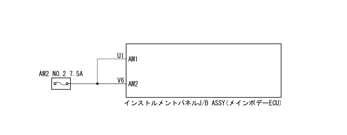
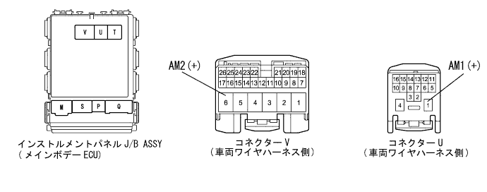

DTC B2271 IG Circuit Malfunction |
| DTC No. | DTC Detection Condition | Inspection Area |
|---|---|---|
| B2271 |
|
|

| Step 1 | Check DTC |
Clear the DTCs, check the DTCs again, and check that no DTC is output.
| Result | Proceed to |
|---|---|
| DTC is output again | A |
| No DTC is output | B |
|
| ||||
| A | |
| Step 2 | Inspect Fuse |
Using SST (Toyota electrical tester), measure the resistance of the fuse.
| Tester Connection | Condition | Standard |
|---|---|---|
| AM2 NO.2 fuse | Always | Below 1 Ω |
|
| ||||
| OK | |
| Step 3 | Inspect Wire Harness (Power Source) |
Voltage Inspection

Disconnect connectors U and V of the instrument panel J/B assembly (main body ECU).
Using SST (Toyota electrical tester), inspect the voltage between each terminal of the vehicle side wire harness connector and body ground.
| Tester Connection | Condition | Standard |
|---|---|---|
| U1 (AM1) - Body ground | Always | 11 to 14V |
| V6 (AM2) - Body ground | Always | 11 to 14V |
|
| ||||
| OK | ||
| ||